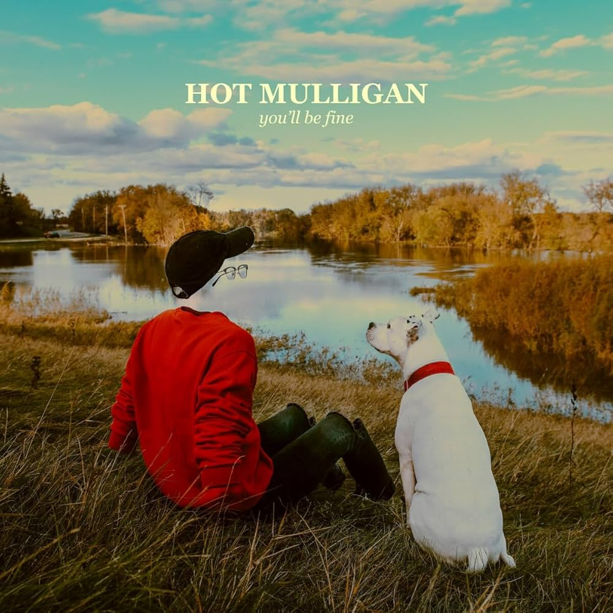
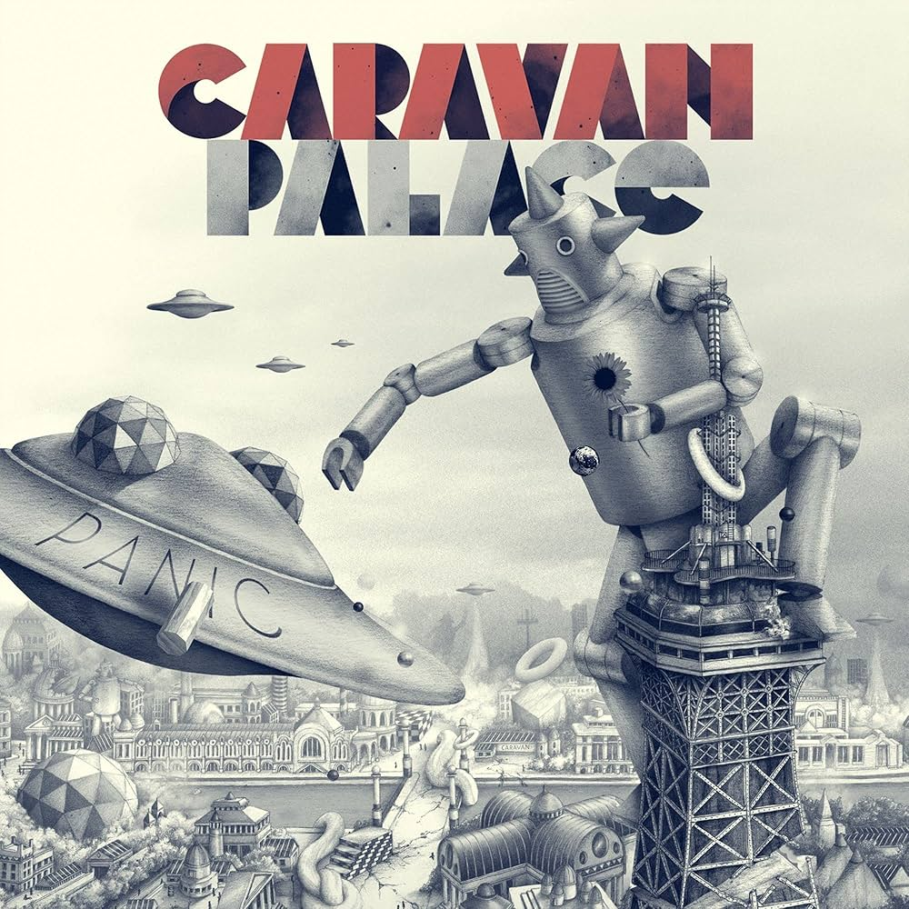
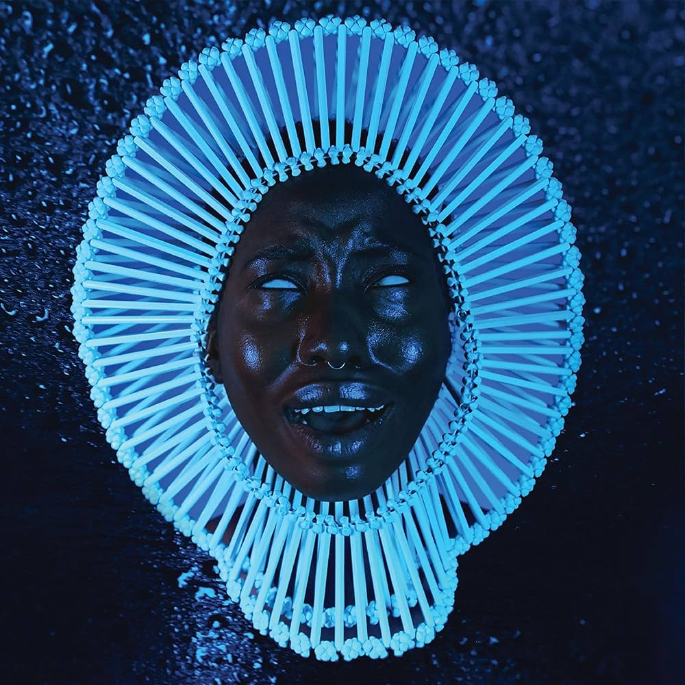
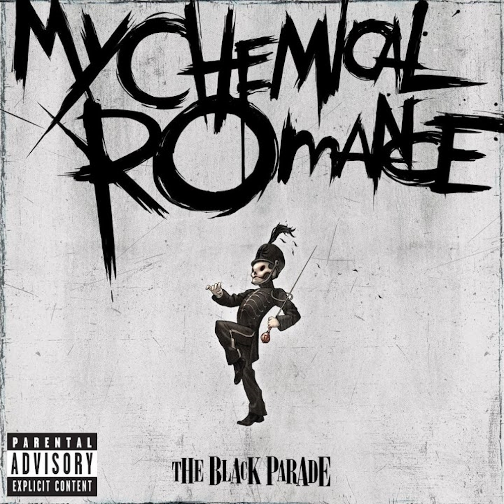
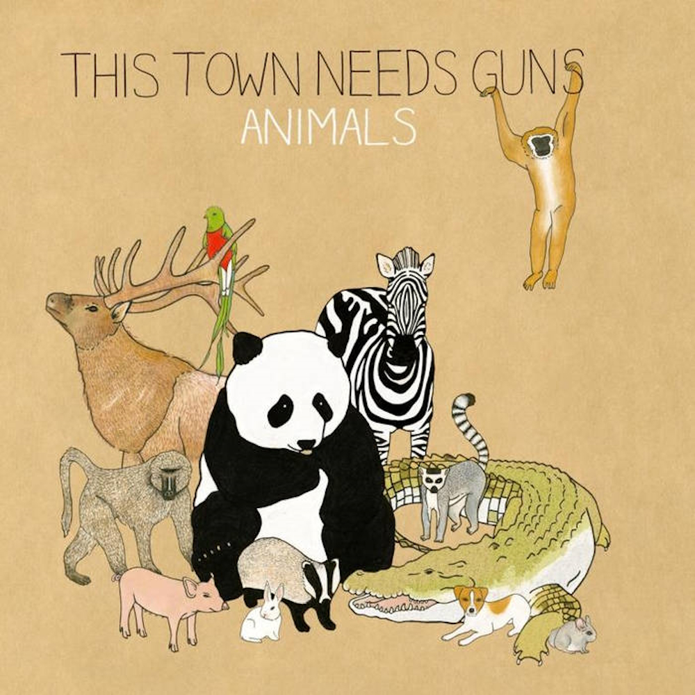
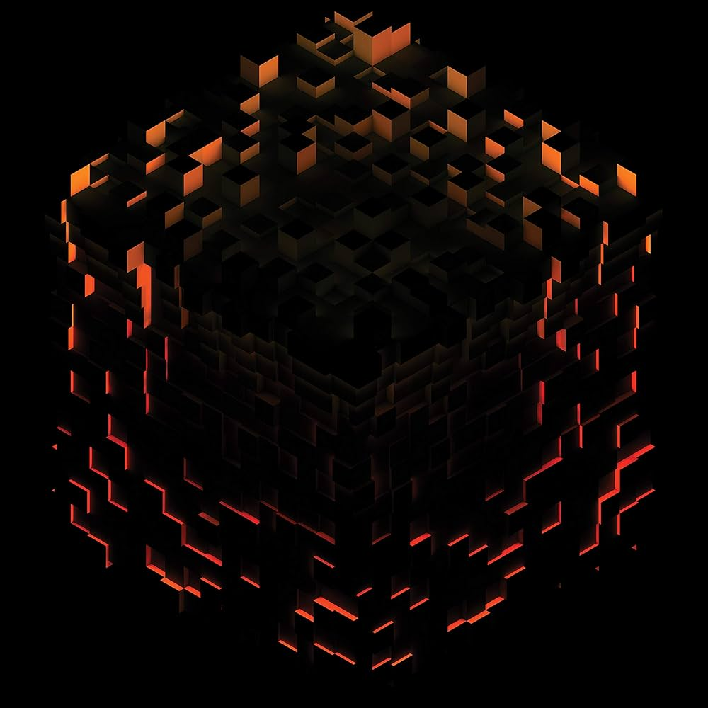

Hot Mulligan - You'll Be Fine
The hottest up and coming artist in the pop punk scene. Blends mid-west emo riffs with vocals that range
from melodic to sorrowful to aggressive. The new gold standard for sad suburban emo kids.

Caravan Palace - Panic
Springing from the Paris underground and blending French house with 1920's swing samples and stylings, Caravan Palace has brought
the electroswing genre to the forefront of popular culture with an energetic sound that's entirely their own.

Childish Gambino - Awaken My Love
Acclaimed actor and rapper Donald Glover (better known by his his stage alias Childish Gambino)
surprised everyone when he announced his upcoming 2016 record "Awaken My Love" would be a soul album.
He then further amazed by making it one of the best soul albums released in the last decade.

My Chemical Romance - The Black Parade
Upon it's initial release, MCR's "The Black Parade" was hailed as the quintessential emo album of it's time.
With the benefit of hindsight however, popular opinion has come to see it for what it really is. A bona fide rock
opera / concept album centered around confronting death. Feelings of sorrow, isolation, anger, and fear resonate through
every track with each more memorable than the last.

This Town Needs Guns - Animals
"Math Rock" is a young genre and difficult to pin down. The generally accepted critera involves angular arpeggiated riffs,
odd tunings, and even odder time signatures. All of this comes together to create a sound that's not quite rock and not quite jazz.
Hailing from Oxford, England, the sardonically named "This Town Needs Guns" is often near the top of my list for those interested
in exploring the genre.

c418 - Volume Beta
Daniel Rosenfeld, professionally known as c418, is perhaps best known for his work on the Minecraft soundtrack. If you've never heard it
before, that might dissuade you. But you'd be making a huge mistake. Beautiful instrumentation and composition work together to produce
one of the most peaceful and captivating soundtracks in videogame history. If I need music to study or relax to, this is what's going on
the turntable.